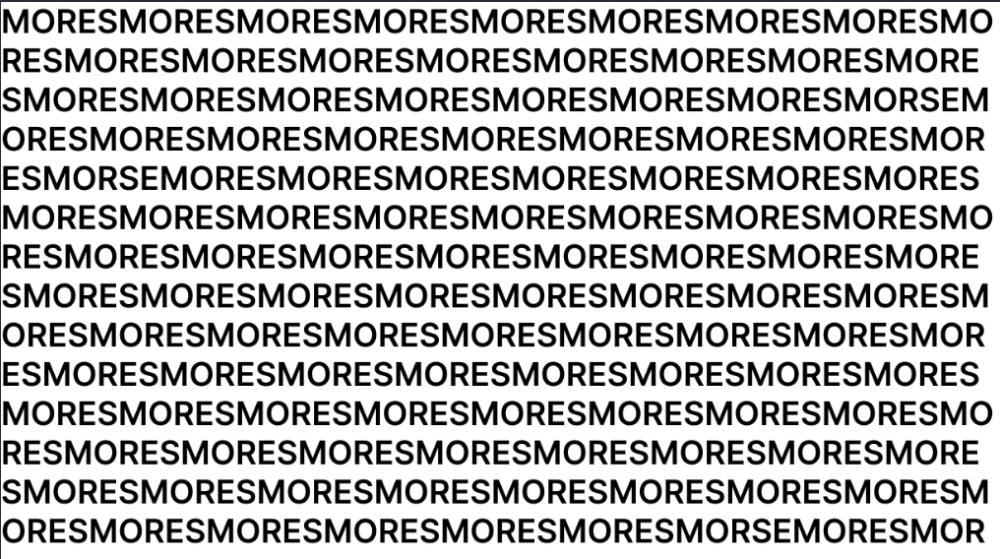
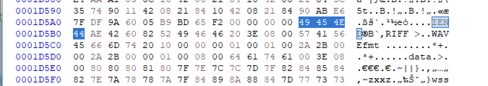
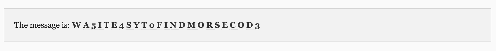

해당 문제는 주어진 PNG 파일을 분석하여 숨겨진 파일을 찾고 모스 부호를 해석하여 플래그를 획득하는 것이 목표입니다. 해당 문제를 통해 파일 시그니처를 분석해보고 모스 부호에 대해 학습할 수 있습니다.

문제 파일을 열면 MORES 와 MORSE 가 섞여있는 문자가 가득 적힌 png 파일을 확인할 수 있습니다. 문제의 제목을 확인해보면, MORSE를 찾아라로 해석되지만, 단순히 화면에서 MORSE 문자열을 찾는 것이 문제 풀이는 아닙니다.
HxD를 이용하여 파일의 헥스 값을 분석해보겠습니다.
파일의 헥스값은 각 파일의 시작을 알려주는 헤더 시그니처가 존재합니다. png 파일은 푸터 시그니처 또한 존재합니다. png 파일의 헤더 시그니처인 89 50 4e 47 0d 0a 1a 0a를 확인할 수 있습니다.

png 파일의 푸터 시그니처인 49 45 4e 44 ae 42 60 82를 검색해 보면, 위와 같은 결과를 확인할 수 있습니다. 파일의 푸터 시그니처로 파일이 끝나는 것이 아닌, 뒤에 다른 헥스 값이 존재합니다. 다른 파일을 숨겨 놓은 것을 확인하고, 파일의 확장자를 알기 위해 파일의 헤더 시그니처를 분석합니다. 다음 파일의 파일 시그니처는 52 46 49 49 로 WAV 파일의 파일 시그니처입니다. 따라서 확장자를 .wav 으로 가지는 파일이 숨겨져 있습니다.
 HxD의 블록선택 기능을 이용하여 png파일의 푸터 시그니처 다음 오프셋부터 마지막 오프셋까지 선택 후 복사합니다.
HxD의 블록선택 기능을 이용하여 png파일의 푸터 시그니처 다음 오프셋부터 마지막 오프셋까지 선택 후 복사합니다.

새로운 파일을 하나 만들어 붙여넣기 해주고, 파일의 확장자를 .wav으로 하여 저장합니다.

저장 후 오디오 파일을 확인할 수 있습니다. 재생해보면 반복적인 기계음 소리를 들을 수 있습니다. 문제의 제목에서 morse code라는 힌트를 주었으므로, audio morse code decode 웹 사이트를 이용하여 해석해주겠습니다.
https://morsecode.world/international/decoder/audio-decoder-expert.html

파일을 업로드 후 디코드한 결과, 다음과 같은 문자열이 나왔습니다.
문제의 description을 확인해보면 플래그 형식은 ewha{[a-z0-9]*} 이므로, 소문자로 바꾸어주고 ewha로 감싸주면 문제의 플레그를 얻을 수 있습니다.
플래그: ewha{wa5ite4syt0findmorsecod3}